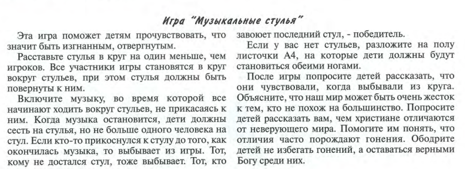
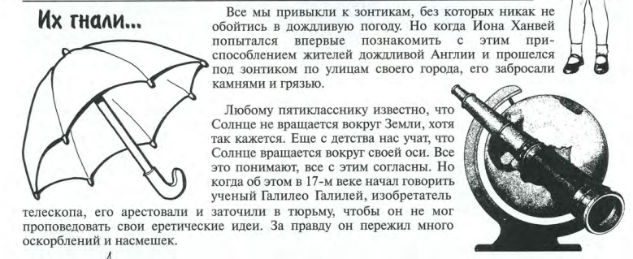

«Блаженны
изгнанные за правду, ибо их есть Царство Небесное».
Заинтересованность:

Перейти
от игры к размышлениям, что когда они выбывали из игры/круга, они могли
почувствовать что-то похожее, что может переживать человек в изгнании: досаду,
обиду, пренебрежение, что от них отвернулись друзья, они не в команде со всеми,
а напротив всеми оставлены, забыты, даже какую то несправдливость(что
им не достался стул) и т.д. Спросите сталкивались ли они с таким в жизни? Были
ли изгнаны(из класса, из компании, из семьи)?
Изгнать могут из-за плохих оценок, за внешность, из страны, выгнать за плохую
работу или прогулы, но в этом месте Писания «Блаженны изгнанные за правду, ибо
их есть Царство Небесное» - не говорится об изгнании из-за плохих поступков или
плохого поведения. А о какой правде говорится в этой заповеди?
Вспомнить урок – «алчущие и жаждущие правды»… (У каждого
человека может быть своя правда, и она может отличаться от правды другого
человека. Один уверен, что ложь во спасение - это
нормально, а другой против любой лжи. И оба думают, что правы. Но только у
Господа единственно верная, истинная, совершенная правда.)
Итак, во-первых, можно быть изгнанным или гонимым за то, что рассказываешь о
Боге, Его заповедях, Его любви к людям. И во-вторых, можно быть гонимым за свою
личную праведную, честную жизнь по заповедям Божьим(возлюби Господа и ближнего, как самого себя.) И страдать за это
можно, испытывая насмешки , оскорбления, унижения,
ложные обвинения, физические преследования, мучения, и даже можно быть убитым
за правду Божию.
Изгнанные за
правду – это не борцы с социальным неравенством и несправделивостью,
это прежде всего те, чья праведная жизнь стала обличением неправд/зла этого
мира. Но почему Господь говорит о том, что праведники будут изгнаны за свою
праведность? Ответ на этот вопрос Сам Господь дает в другом месте Евангелия:
«Люди более возлюбили тьму, нежели свет, потому что дела их были злы» (Ин. 3,
19). Праведная жизнь становится обличением жизни греховной, жизни во зле. (Пояснить на примерах, если кому не понятно,
что значит возлюбить тьму)
Для детей постарше раскрыть тему «поглубже»:
Вся история
Церкви свидетельствует: во все времена были и есть те, кто не приемлет
христианскую веру, кто готов преследовать за исповедание христианства.
Неприязнь к Церкви будет до скончания века, мы видим это и в наши дни. В основе
этой вражды лежит ненависть и неприязнь не столько к верующим людям, сколько к правде Божией. «…ибо всякий,
делающий правду, рожден от Бога» (1 Ин.2:29) поэтому то и гонят христиан,
которые носят правду Божью внутри себя. Это противостояние зла в мире, и того зла, которое проникает в сердца
людей, Царству Божьему и правде Его!
Важно понимать, что гонения за правду Божью, это не гонение на тебя, ненавидят
не тебя лично, и твои добрые дела, а противятся они Христу в тебе! Его гонят,
Его Истине противятся.
Для младших детей история-рассказ: Когда солнечные лучи
светят в комнату, можно увидеть, есть ли беспорядок, пыль или грязь. Одни люди
потрудятся и сделают комнату чистой. Другие закроют шторами, чтобы не видно
было грязи. Если кто-то ведёт себя хорошо, не обманывает, не обижает других, не
прогуливает уроки - это как прекрасные лучики солнца.
Одни захотят стать такими же хорошими, а другие захотят остаться жить в грязи,
делая плохие и грязные поступки. И ещё начнут обижать и смеяться над теми, кто
поступает правильно.
Игра – «Секретное служение»
Можно детям
предложить представить себя подпольной церковью, которая должна в тайне
проводить служения.
Предистория к игре: Ночь. Город засыпает.
Христиане просыпаются и тайно от родственников, соседей выходят на улицу и собираются
в тайном месте, в чьем-то подвале или гараже, или лесу. Свет включать нельзя,
максимум свечу, шторы занавесить, разговаривать и петь только шёпотом.
Вариант 1: Предложить детям сесть
плотно в круг и спеть шёпотом всем известную любую песню, например-“Лев” ( Ты назвал по имени меня, Ты сказал, что я - Твоё дитя. Как
могу бояться, если я. Я-дитя великого Царя. Неизвестность не пугает, когда Ты
рядом я смел, как лев).
Наставник должен отвернуться и ходить вокруг, спиной к детям на расстоянии пары
шагов от них, если он услышит слова песни или кто-то что-то скажет, он
поворачивается и кричит: «Обнаружены!»
Вариант 2: дети сидят в плотном
круге, под покрывалом у них есть фонарик и у одного листок с текстом(место
Писания), который он должен всем тихо зачитать, а все должны повторить и
запомнить. Точно также обнаружить себя шумом нельзя, дается время 2 минуты! А
когда покрывало снимается, каждый должен рассказать, что запомнил, что услышал!
Привести любую из историй «гонений»
за хорошие вещи, и перейти к истории из Библии.
История
из Библии для всех:
Стефан - один из
первых диаконов, первый мученик апостольской церкви.
Можно кратко зачитать фрагменты истории о нём и поразмышлять с детьми, ответив
на вопросы.
Деяния 6:8-15
«…И слово Божие росло, и число учеников весьма умножалось в Иерусалиме; и из
священников очень многие покорились вере.
А Стефан, исполненный веры и силы, совершал великие чудеса и знамения в народе.Некоторые из так называемой синагоги Либертинцев, и Киринейцев, и
Александрийцев, и некоторые из Киликии, и Асии
вступили в спор со Стефаном; но не могли противостоять мудрости и Духу,
Которым он говорил. Тогда научили они некоторых сказать: мы слышали, как
он говорил хульные слова на Моисея и на Бога. И
возбудили народ, и старейшин, и книжников и, напав, схватили его и повели в
синедрион. И представили ложных свидетелей, которые говорили: этот человек
не перестаёт говорить хульные слова на святое место
сие и на закон. Ибо мы слышали, как он говорил, что Иисус Назорей разрушит место сие и переменит обычаи, которые
передал нам Моисей. И все, сидящие в синедрионе, смотря на него, видели
лицо его, как лицо Ангела…..»
Деяния 7:54-60
Слушая сие, они рвались сердцами своими и скрежетали на него зубами. Стефан же,
будучи исполнен Духа Святого, воззрев на небо, увидел славу Божию и Иисуса,
стоящего одесную Бога, и сказал: вот, я вижу небеса отверстые и Сына
Человеческого, стоящего одесную Бога. Но они, закричав громким голосом,
затыкали уши свои, и единодушно устремились на него, и, выведя за город,
стали побивать его камнями. Свидетели же положили свои одежды у ног юноши,
именем Савла, и побивали камнями Стефана,
который молился и говорил: Господи Иисусе! приими дух
мой. И, преклонив колени, воскликнул громким голосом: Господи! не вмени им
греха сего. И, сказав сие, почил.
Вопросы:
- Каким был
Стефан? - исполненный веры и силы,
совершал великие чудеса и знамения
- что людей раздражало в нем? - не могли
противостоять мудрости и Духу когда спорили с ним
- что предпринять решили против него? – возбудили народ, напали и схватили,
привели на суд, оклеветали.
- каким оставался Стефан в сложной ситуации? – спокойным, лицо, как у Ангела.
- что преживали те, кто слушал речи Стефана? –
злились - рвались сердцами своими и скрежетали на него зубами, затыкали уши и
задумали убить
- как встретил свою смерть Стефан – исполнился Духа, увидел славу Божию и
Иисуса, молился Богу о себе и врагах
И от последнего вопроса переходим к теме
блаженства среди гонений, что помогло Стефану оставаться таким спокойным?
Откуда он брал силы молиться не только за себя, но и за врагов?
«…ибо их есть Царство Небесное»
· Блаженны вы, когда
будут поносить вас, и гнать, и всячески неправедно злословить за Меня.
Радуйтесь и веселитесь, ибо велика ваша награда на небесах: так гнали и
пророков, бывших прежде вас.» (Мф. 5-12).
· «Блажен человек, который переносит искушение,
потому что, быв испытан, он получит венец жизни, который обещал Господь любящим
Его.»
· «Возлюбленные! огненного искушения, для испытания вам
посылаемого, не чуждайтесь, как приключения для вас странного, но как вы
участвуете в Христовых страданиях, радуйтесь, да и в явление славы Его
возрадуетесь и восторжествуете.» 1- Петра 4
· Я не стыжусь благовествования
Христова”(Рим. 1-16).
«Изгнанные за
правду» это те, кто остается тверд в вере, несмотря на внешние притеснения,
проявления недоброжелательности и агрессии. Иисус говорит, что Царство
Божие обещано всем изгнанным и злословимым, т.е всем сохранившим верность Богу. А это обещание победы
над миром, лежащим во зле - «Мужайтесь; Я победил мир». Ин16:31
Бог побеждает мир Крестом, а верующие в Него –
праведностью, которую Бог даровал нам через Крест и Воскресение. И Он не
оставляет нас один на один с гонителями.
Он дает силу Духа, «.. но
вы примете силу, когда сойдёт на вас Дух Святой; и будете Мне
свидетелями в Иерусалиме и во всей Иудее и Самарии и даже до края земли» Деян 1:8
и Его поддержку, «Утешитель же, Дух Святой, Которого пошлет Отец во имя Мое,
научит вас всему и напомнит вам все, что Я говорил вам.» Ин. 14:26
водительство: «ибо Святой Дух научит вас в тот час,
что должно говорить.
Евангелие «от Луки 12:12,
погружая нас в Свою любовь. Только силою
Возлюбившего нас Господа мы можем преодолеть такие трудности в жизни, как гонения
за правду Божью! «Но всё сие
преодолеваем силою Возлюбившего нас.» Римл
8:37
********************
Доп.информация для старших:
Примеры из Библии: Апостолы:
Пётр-распят, Андрей - распят, Фаддей-убит стрелами, Варфоломей-избит плетью и
распят, Иаков младший-побит камнями, Фома-пронзен копьем, Матфей-убит топором,
Иаков-обезглавлен, Иисуса Христа, который исцелял больных, воскрешал из
мёртвых, дарил людям спасение и любовь, - мучительно распяли. Статистика на 2025 год: каждый день
убивают 13 христиан из-за их веры, 12-несправедливо арестовывают и заключают в
тюрьму, 5-похищают. В 50 странах мира на сегодняшний день идут гонения на
христиан.